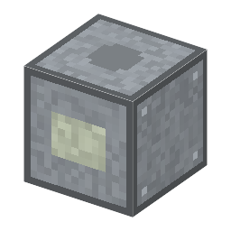

説明
①子ども 電気をかけると暗くなる窓。液晶画面の1つの点（セグメント）。
②学生 こすった ITO ガラス2＋MBBA＋偏光フィルム2＋銅ケーブル。銅ケーブルで電気（1 W）をつなぐと正面が暗く、切ると明るい。電卓の数字は、この点を7つ並べて作る。
③大人 2枚の偏光フィルムは直角。電気なし：液晶がねじれて並び、光の向きを 90 度回すので、2枚目を通る（明るい）。電気あり：分子が電場の向きに立ってねじれがほどけ、光が2枚目で止まる（暗い）。液晶は自分では光らず、光の通り道を開け閉めするだけ。
④ガチ 1970〜71年、スイスのロシュ社の研究者たちが TN 方式を発表した（同じころアメリカでも独立に）。1973年、シャープの電卓 EL-805 は液晶と CMOS で電池が長くもつ薄い電卓になった。本物の液晶は数マイクロワットで動くので、腕時計が電池で何年も動く。
作り方
使い道
（このアイテムを使うレシピは無い）